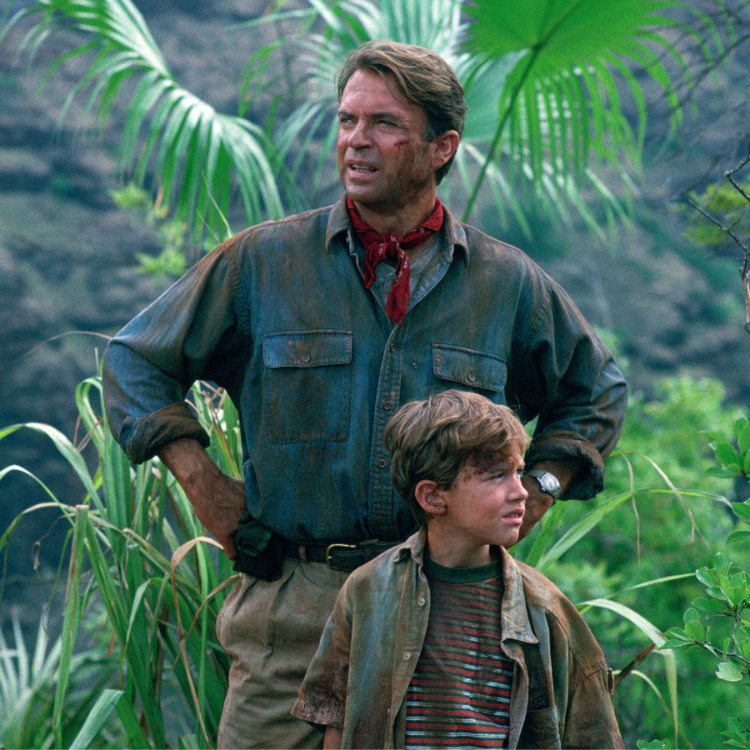
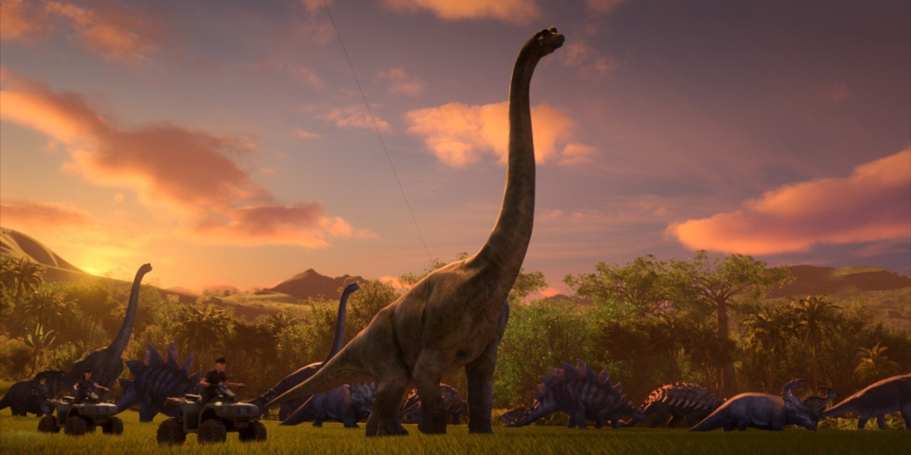

Otwórz oczy i wyobraź sobie wzniesienie się nad bramą, która wita Cię w Parku Jurajskim. To nie zwykła brama - to monumentalna konstrukcja, której wygląd sugeruje, że przenikniesz granicę czasu i przestrzeni. Skały, które zdają się wyrastać z ziemi, są misternie odwzorowane, a na ich szczycie rośnie egzotyczna roślinność, która sprawia, że czujesz się jakbyś przeniósł się w tropikalne rejony sprzed milionów lat. Wkraczasz przez tę majestatyczną bramę, a uczucie ekscytacji miesza się z podekscytowaniem. Personel parku, ubrany w stroje przypominające te z epoki dinozaurów, serdecznie Cię witają. Ich uśmiechy są zarówno przyjazne, jak i pełne tajemnicy, sugerując, że niezwykłe przygody czekają tuż za rogiem. Idziesz dalej, a wszystko wokół Ciebie przykuwa Twoją uwagę. Drzewa, rośliny, wszystko wydaje się być zebrane z innej epoki i przeniesione do teraźniejszości. Dźwięki ptaków i szmer wiatru w liściach dodają dodatkowego realizmu, sprawiając, że czujesz się jakbyś naprawdę znalazł się w prehistorycznym lesie. Podążasz za wskazówkami personelu, który prowadzi Cię na szlak pełen niespodzianek. Tuż obok ciebie przechodzą różne gatunki dinozaurów, ich potężne sylwetki i majestatyczne ruchy przykuwają Twoją uwagę. To nie jest zwykłe safari - to podróż w czasie, która pozwala Ci zobaczyć te niesamowite stworzenia w ich naturalnym środowisku. Wizja parku, w którym historia i współczesność przenikają się, staje się rzeczywistością, gdy docierasz do interaktywnych wystaw i edukacyjnych programów. Tu dowiadujesz się o życiu dinozaurów, ich zwyczajach i ekosystemach, a wszystko to dzięki najnowszym osiągnięciom technologicznym i badawczym. Każdy krok, każde spojrzenie, to nowe odkrycie, które przenosi Cię w inne czasy. Park Jurajski to nie tylko atrakcja turystyczna - to podróż, która zmienia Twoje spojrzenie na świat, ucząc Cię cenić i rozumieć fascynujący świat prehistorycznych gigantów. To niezapomniane doświadczenie, które zostanie z Tobą na zawsze.